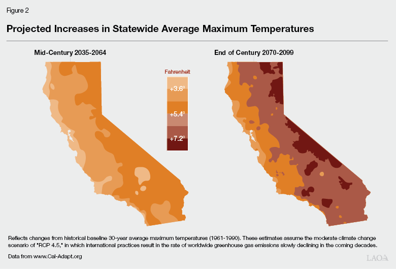

Californians Affected by Climate Change
According to the California Department of Food and Agriculture. “Over a third of the country’s vegetables and three-quarters of the country’s fruits and nuts are grown in California. California agriculture exported totaled $20.8 billion in 2020, a decrease of 4.1 percent from 2019. ” And the University of California assessment found that by 2050, the crops yield is projected to decline by 40 percent.

Extreme Drought would highly affect the agricultural industry and affect the food safety of the country. Los Angeles Times reports that the extreme weather pattern has started depleting most of the water reservoirs such as Lake Mead which is a largest reservoir had historical average of 61 percent is down to 28 percent as of November, etc.
Farmers Like Joe Doel Bosque own 2000 acres of his California farm surveys his land knowing that he couldn’t farm those land because of drought. Bosque states, “I got the land, I got the people. I have everything but no water. I can’t do it,” said Del Bosque, a 73-year-old farmer in Firebaugh, California.” The drought has led him to stopped growing asparagus and sweet corn and focus on the melons and almonds for the survival. He could not hire people that worked him for years